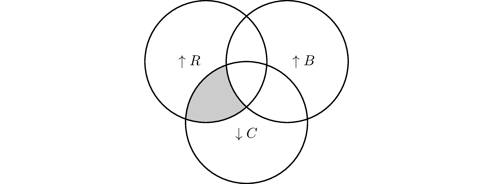
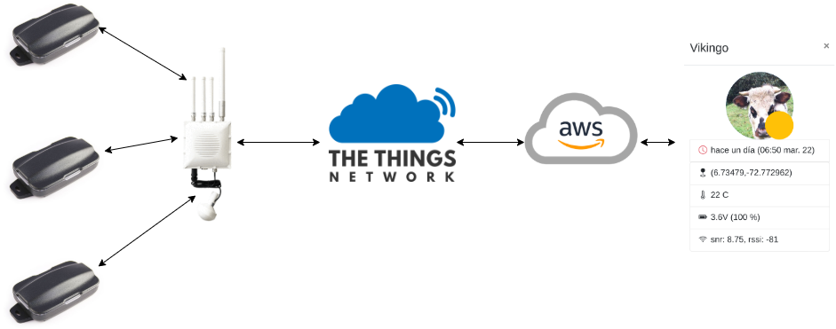
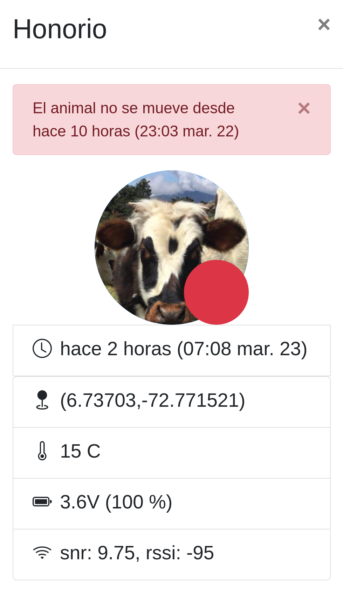
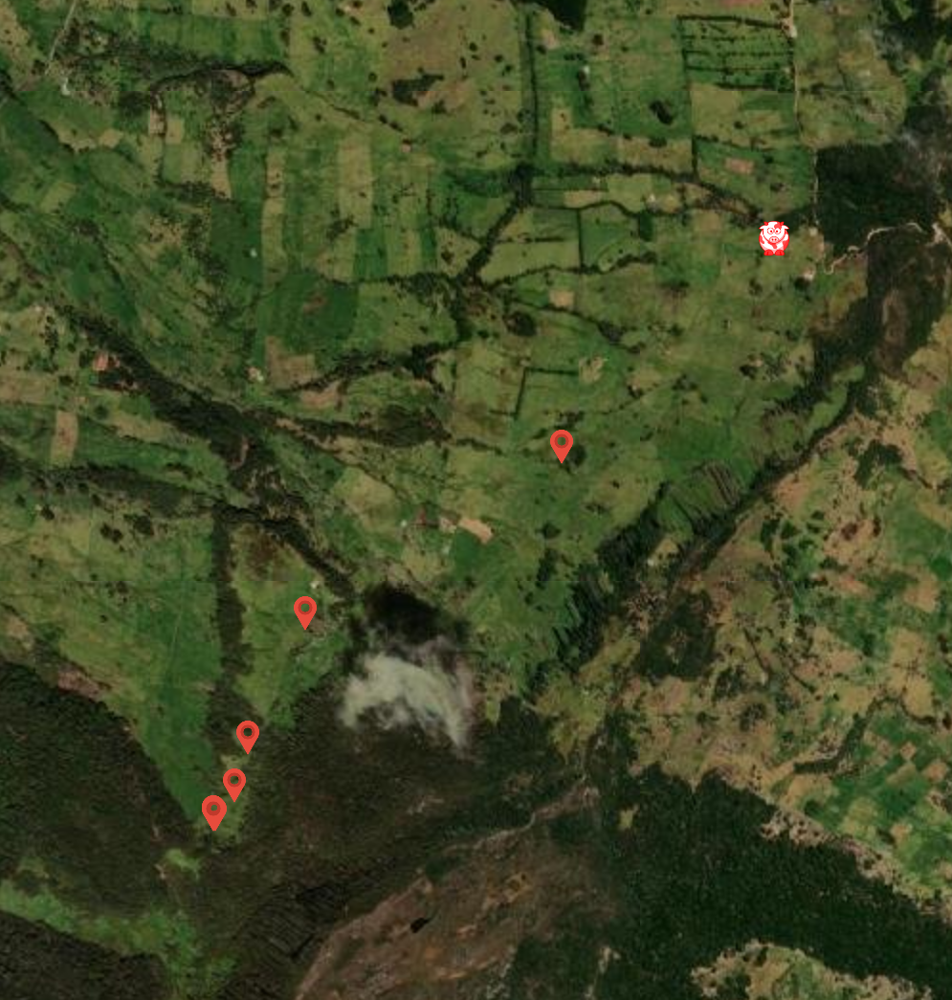
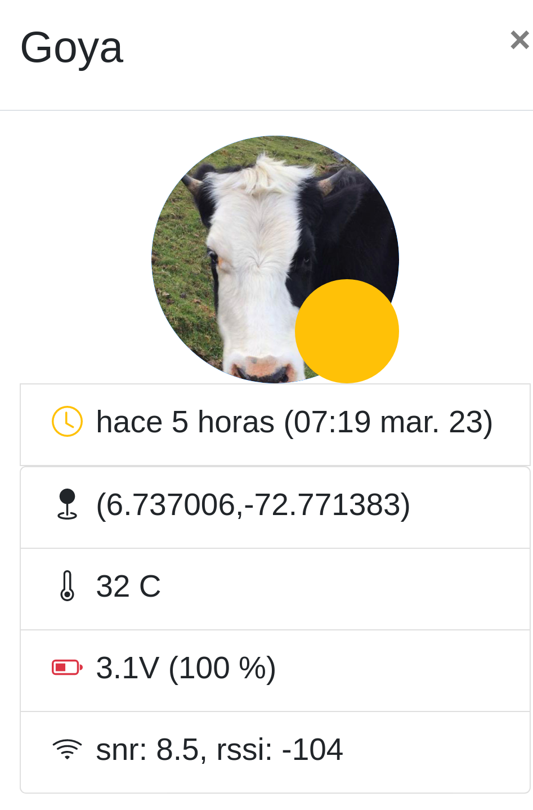
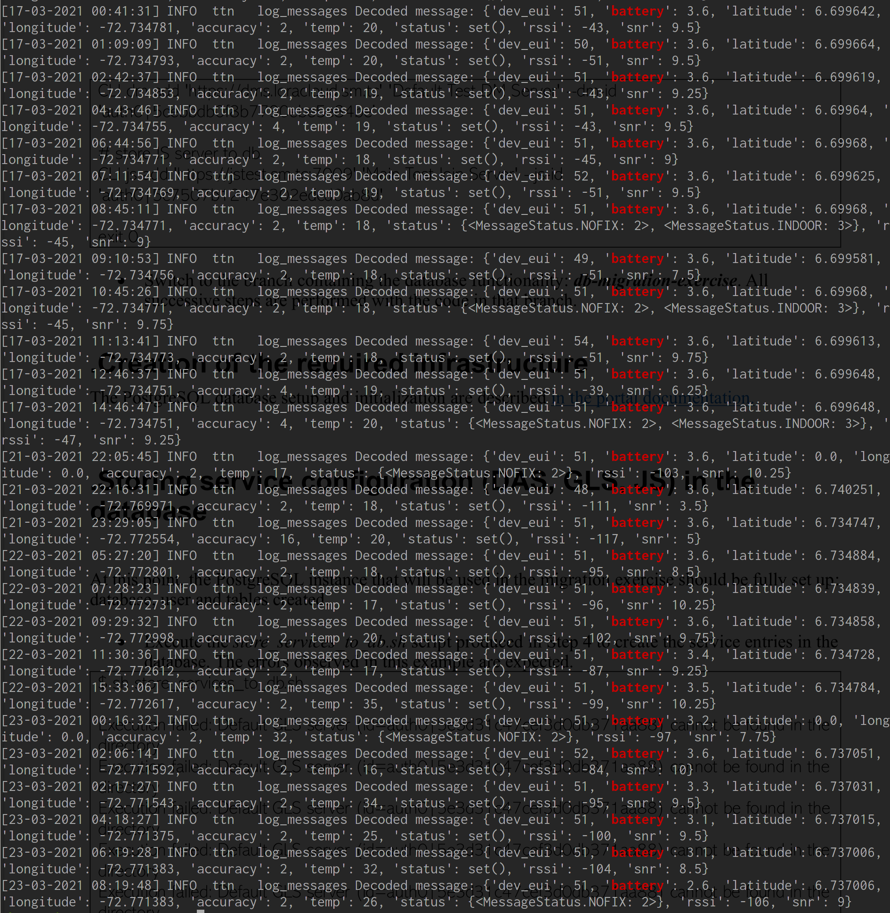
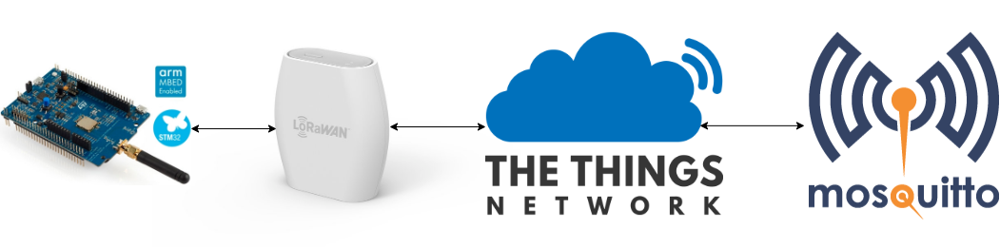
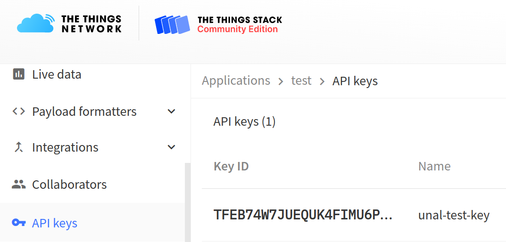

Examples of LoRaWAN® Applications
Diego Sandoval
Unal, 2021
## CV * [2002 - 2008] Electrical Engineering @ Unal * [2006] LABE ⚽ * [2007 - 2010] CIF * [2010 - 2015] ETH * [2011 - 2019] Sustainable buildings * [2017 - 2019] **LoRa/LoRaWAN** - hobby * [2019 - ] <span class="fragment highlight-red">**LoRa®/LoRaWAN®**</span> - job
<br></br> <br></br> <br></br> <br></br> [https://cloudiaworld.github.io/](https://cloudiaworld.github.io/)
## Disclaimer \# 1 * This is a pet project
## Outline * LoRa®/LoRaWAN® recap ~ 10' * A cow-tracking application 🐮🐮🐮 ~ 15' * Intermezzo ~ 3' * Getting started with LoRaWAN® ~ 10' * Q&A
## LoRa® and LoRAWAN®
## Recap * [Gonzalos's presentation](https://speakerdeck.com/gonzalocasas/the-road-to-open-networks) * [What are LoRa and LoRaWAN?](https://lora-developers.semtech.com/library/tech-papers-and-guides/lora-and-lorawan/) * [What is LoRaWan?](https://reference.digilentinc.com/reference/programmable-logic/pynq-z1/reference-manual) * [LoRa Alliance®](https://lora-alliance.org/)
## Difference between LoRa and LoRaWAN <img data-src="https://lora-developers.semtech.com/uploads/documents/images/Technology_stack.png"> Note: LoRaWAN specification, industry standard
## Wireless technologies  * $\uparrow R$: long range * $\uparrow B$: high bandwidth * $\downarrow C$: low power consumption (cost)
## (Typical) LoRaWAN network implementation <img data-src="https://lora-developers.semtech.com/uploads/documents/images/Typical_Network.png"> [Source: Semtech](https://lora-developers.semtech.com/library/tech-papers-and-guides/lora-and-lorawan/) Note: Device classes 1-gateway 1000's of devices
<br></br> <br></br> [Source: TTN](www.thethingsnetwork.org)
## Infrastructure ownership * Infrastructure as a service: operator * Private network * Open-source: owned by the community * A hybrid model
<br></br> <br></br> <br></br> <br></br> <br></br> [TTN map](https://www.thethingsnetwork.org/map)
?
## A 🐄-tracking application implementing LoRaWAN
Note: Forest Interest in sustainability conservation agriculture
## Disclaimer \# 2 I think cattle-raising, at least in its current form, is not sustainable Note: Silvopastoril
## Happy cows 🐮🐮🐮 #### Issues / Requirements * Remote location, difficult access * Cows can roam into the forest * Establish timely when a cow requires assistance Note: Movement patterns Bebederos
## Architecture  Note: Tracker GPS modified firmware Show TTN console
## Beta-testing
## Production
## Happy cows 🐮🐮🐮 #### [github: backend](https://github.com/twaclaw/cowtracker_app) * Get messages from TTN * Store measures to a database * Serve frontend endpoints * Check if a cow is moving * Check if messages are being received * Check if a particular tracker is sending data * Send emails
## Happy cows 🐮🐮🐮 #### [github: frontend](https://github.com/twaclaw/cowtracker_ui) * Visualization
## Happy cows 🐮🐮🐮 
## Happy cows 🐮🐮🐮  Note: Show application pangote Problems in engineering are unavoidable It is important to understand them I show you the symptoms, and you try to come up with a diagnosis
## Happy cows 🐮🐮🐮 
## Happy cows 🐮🐮🐮 
## Happy cows 🐮🐮🐮 #### Possible improvements <img data-src="https://www.semtech.com/uploads/products/product/LoRa-Edge-LR1110.jpg" height="300"> [Source: Semtech](https://www.semtech.com/products/wireless-rf/lora-transceivers/lr1110)
?
## Intermezzo ### The democratization of knowledge
* The [information source](https://en.wikipedia.org/) I used to prepare some of the slides * The [framework](https://github.com/hakimel/reveal.js/) I used to create them * The [text editor](https://github.com/Microsoft/vscode) I used to type them * The [web browser](https://github.com/mozilla) am using to display the presentation * [This presentation itself](https://github.com/twaclaw/presentation_unal_cowtracker) * All code examples, including [basicmac](https://github.com/mkuyper/basicmac) and [ttn](https://github.com/TheThingsNetwork) <span class="fragment fade-in"> <p class="fragment grow highlight-red">are all open-source!!!</p> </span>
Source: Wikipedia
## Scientia potentia est * *The New Instrument* Francis Bacon, 1620 * *Leviathan* Thomas Hobbes, 1668 <!-- ### Knowledge is power -->
## The discovery of ignorance <br> Modern science paradigm: <br> <br> * *Ignoramus*: we do not know * We have to obtain knowledge by gathering observations and using mathematical tools * The acquisition of `new powers`: new technologies <br> <p style="font-size:10pt">Source: Harari, Sapiens</p>
## Getting started with LoRaWAN
## Demo  - [B-L072Z-LRWAN1 STM32L0 Discovery kit](https://www.st.com/en/evaluation-tools/b-l072z-lrwan1.html#) - [Mini Hub](https://lora-alliance.org/lora_products/mini-hub-wall-plug-gateway/) ([basicstation](https://github.com/lorabasics/basicstation)) Note: Tranceiver, modem
## End device: [B-L072Z-LRWAN1](https://www.st.com/en/evaluation-tools/b-l072z-lrwan1.html#) <img data-src="images/radio.png" height="400"> [Source: st.com](https://www.st.com/resource/en/user_manual/dm00329995-discovery-kit-for-lorawan-sigfox-and-lpwan-protocols-with-stm32l0-stmicroelectronics.pdf)
## End device: [basicmac programming model](https://doc.sm.tc/mac/programming.html) <img data-src="https://doc.sm.tc/mac/_images/lmic-arch.svg"> Note: OS and device 100ks devices history
## It's console time ...
## End device: [basicmac.io](https://basicmac.io) [Getting started](https://basicmac.io/guide/gettingstarted.html) <pre> <code data-trim data-noescape console> # clone the repository including submodules git clone --recurse-submodules https://github.com/mkuyper/basicmac.git basicmac cd basicmac # create a virtual environment and activate it python -m venv venv # or virtualenv venv depending on the distro source venv/bin/activate # install Python dependencies # can also be pip3 depending on the distro pip install -r basicloader/requirements.txt pip install -r ./requirements.txt pip install pyyaml # an additional dependency </code> </pre>
## End device: [basicmac.io](https://basicmac.io) Compiling <pre> <code data-trim data-noescape bash> cd projects/ex-join VARIANT=eu868 make make loadbl # bootloader make load # application </code> </pre>
## End device: personalization * Over the air activation * *DevEUI* End device identifier * *JoinEUI* Join-Server identifier * *AppKey* Application Key <pre> <code data-trim data-noescape bash> minicom -D /dev/ttyACM0 -b 2000000 </code> </pre> Note: EEPROM
<br> <br> <br> <br> <br> <br> <br> <br> <br> <br> <br> See [here](https://basicmac.io/guide/gettingstarted.html#personalization) how the personalization is done.
## Application side  <pre> <code data-trim data-noescape bash> export LNS_KEY="NNSXS.TFEB74W7JUEQUK4..." mosquitto_sub -h eu1.cloud.thethings.network \ -t 'v3/unal@ttn/devices/+/up' \ -u "unal@ttn" \ -F "%p" \ -P ${LNS_KEY} |jq '.uplink_message.frm_payload | @base64d' </code> </pre>
## Simulating a temperature reading #### Device side <pre> <code data-trim data-noescape c> // projects/ex-join/main.c static bool tx (lwm_txinfo* txinfo) { txinfo->data[0] = rand() % 20 + 200; txinfo->dlen = 1; txinfo->port = 15; txinfo->txcomplete = txc; return true; } </code> </pre>
## Simulating a temperature reading #### Application side <pre> <code data-trim data-noescape bash> mosquitto_sub -h eu1.cloud.thethings.network \ -t 'v3/unal@ttn/devices/+/up' \ -u "unal@ttn" -P $LNS_KEY \ -F "%p" |jq '.uplink_message.frm_payload' \ -r --unbuffered \ | awk '{cmd="base64 -d|od -t d2 -An"; print $0|cmd;close(cmd)};' \ | ttyplot </code> </pre>
?